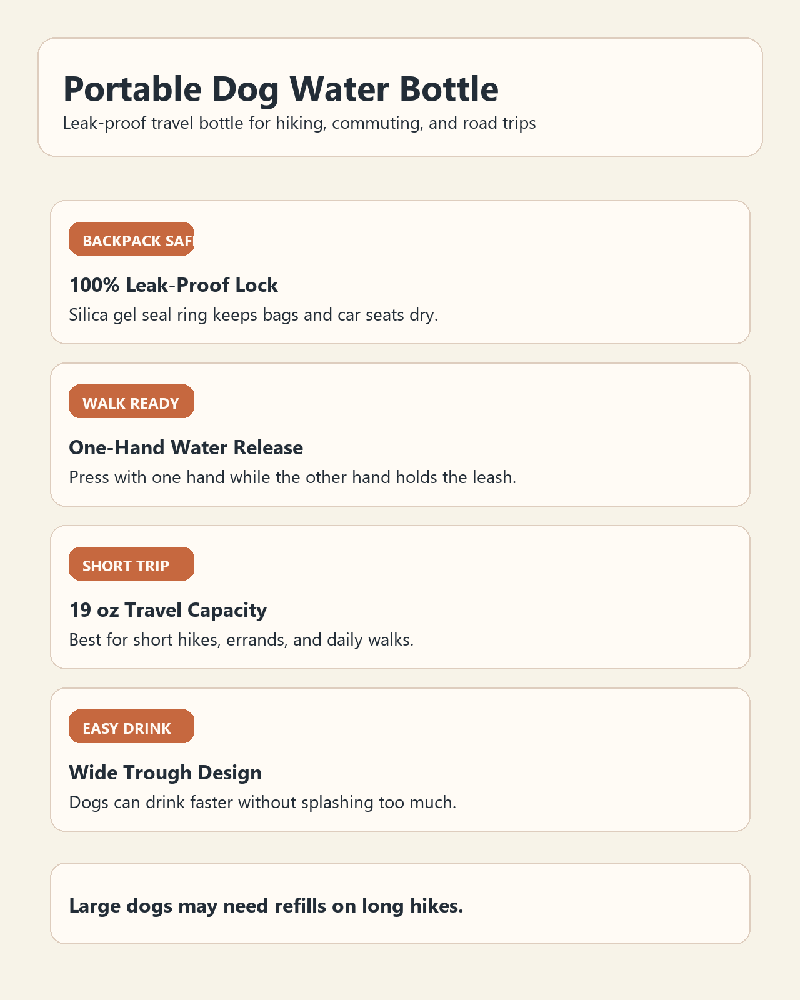

Pain Point
真正缺的不是再多一个评论分析工具，而是判断竞品卖点真假。
很多工具可以做情绪分析、关键词统计、差评归类，但运营在真正做决策时，最关心的问题其实是：竞品页面写的卖点，到底有没有被用户真实体验支撑？
Pain Point
很多工具可以做情绪分析、关键词统计、差评归类，但运营在真正做决策时，最关心的问题其实是：竞品页面写的卖点，到底有没有被用户真实体验支撑？
Why Now
用户不会总是原样复述页面文案，但会用真实场景描述体验。ClaimCheck 的价值就在于把这些间接证据翻译成运营能用的判断。
Preset Demo
Preset Input
点击“加载预设演示”查看样例。

Preset Output
总判断
值得学习
风险最大
隐藏机会